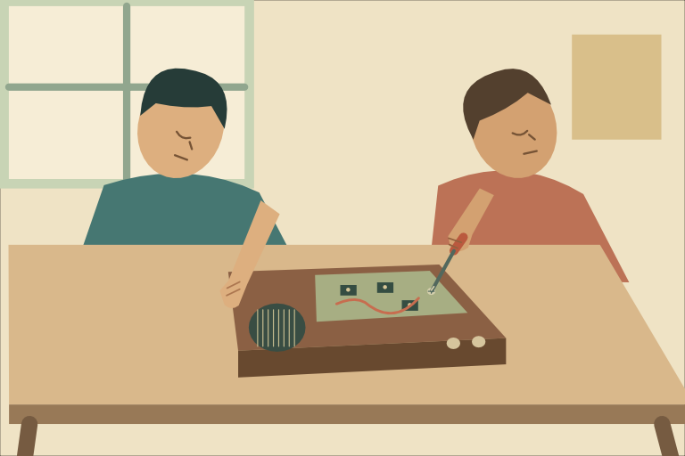
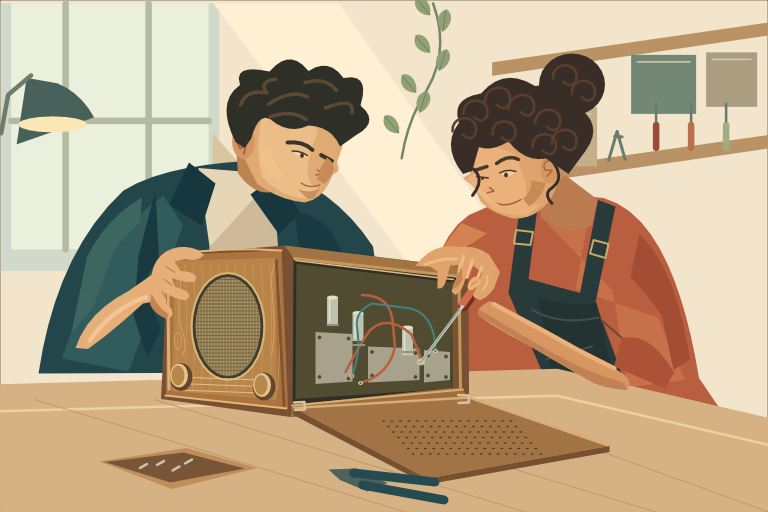
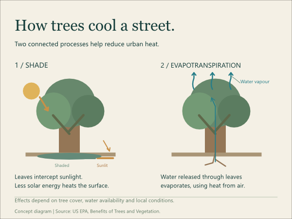
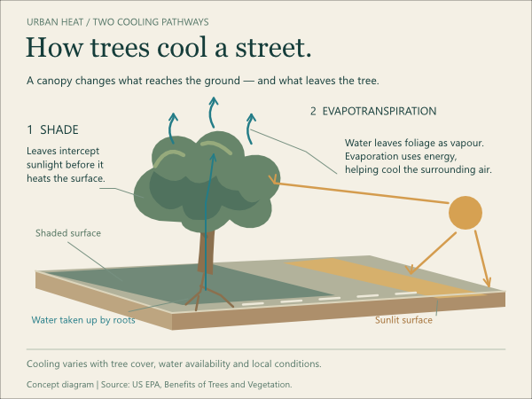

Compare the result.
Question the claim.
A different palette or a closer match to the creator’s target is not enough. The artwork must communicate its brief more effectively.
Campus night walk
Equal required event wording and viewing sizes. Compare curiosity, night-walk recognition, copy specificity and logistics.


Collaborative radio repair
Wordless scene. Compare attentive gesture, supporting fingers, tool-to-screw contact, cabinet depth and readable components.




Two cooling processes
Equal factual constraints. Compare causal continuity, shaded/sunlit ground, water release and beginner readability.




Observed results, with limits
Two fresh blind specialists independently preferred the retained Studio versions in all three common-brief comparisons, with no consequential regression. The owner selected those same versions in the anonymous set. Different styles and scores alone do not count. These are creator-authored case studies, not independent-agent randomized trials.
The repair scene remains a flatter interpretation of its generated target, with simplified forearm anatomy and spare tools. Its construction run used three correction rounds and retained the strongest result with these weaknesses disclosed. Reference discovery was bounded: three inspected calibration references per brief, below the broader 15–25-work research target.
Editable native artwork, live-text SVG and PDF files are included in the selected source examples. Download the editable examples and source, verify SHA256SUMS, or inspect the experimental release notes.